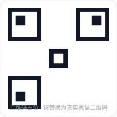

在 WhatsApp 做获客，真正难的不是"加人"，而是号活下来。我们管理 2 名业务员、共 12 个 WA 账号，在行业平均寿命仅约 7 天的环境下维持稳定获客——靠的不是某个"解封秘籍"，而是一整套把封号当成常态来设计的运营体系。
这篇是站内的"信任状"级内容：它不是泛泛的养号技巧，而是真实高封号率环境下的工程化做法。具体存活数字以占位呈现，待补充。
⚠️ 合规边界
本文只讲"合规使用 WA 做业务承接"的运营方法（养号、行为阈值、分流、话术），不涉及任何绕过平台风控、伪造设备、批量注册规避等违规手段。违规操作不仅会导致账号永久封禁，还可能承担法律责任。
一、把"封号"当系统变量，而不是意外
很多人把封号当事故，一封就慌。但在高封号率环境里，正确的心智是：封号是预期内的损耗，关键是让损耗可控、可补充、不影响获客连续性。
- 每个号有"预期寿命"，到了就轮换，不赌它长生。
- 号是消耗品，不是资产——重点在"补充速度 ≥ 损耗速度"。
- 获客不能押在单个号上，必须有多号分流兜底。
二、号养成年表（框架）
新号不能直接上量，需要一段"养成年"。下面是结构化的养号节奏框架：
基础激活
完成资料设置、绑定可用号码、建立基础可信度（头像、状态、少量真实联系人）。此阶段零营销动作。
低频互动
仅与已存在联系人做自然互动，逐步提升活跃度，不主动加陌生人大规模群发。
小步承接
开始小规模承接线索，单日消息量控制在阈值内，观察是否被限流或风控提示。
稳定运营
进入常态获客承接，但始终保留"备用号池"以维持轮换弹性。
三、行为阈值：量比内容更危险
📊 关键阈值（框架，具体数值待填）
单号单日主动添加上限：[真实阈值待填]
单号单日消息总量上限：[真实阈值待填]
群发间隔与批次上限：[真实阈值待填]
触发风控的高危动作清单：[待业务方补充]
核心原则：封号大多不是因为"发了什么"，而是"发得太快太多太像机器"。把节奏降下来，存活率立刻不同。
四、承接分流：不让鸡蛋在一个篮子里
- 多号轮询：线索按规则分配到不同号，单号负载不超阈值。
- 失效秒切：某号被限流/封禁，流量立即切到备用号，获客链路不中断。
- 话术分层：首响、跟进、逼单分层管理，降低单个业务员的操作负担与失误率。
五、给高封号率卖家的建议
如果你的业务高度依赖 WA 承接，请现在就做三件事：① 建号池而不是押单号；② 把养号和阈值 SOP 写下来让业务员照做；③ 设分流机制保证"封一个不影响全盘"。这比任何"解封技巧"都重要——因为封号不会停，你能做的是让它伤不到业务。

领取《WA 防封手册》
扫码加微信，发你完整版「养号年表 + 阈值清单 + 分流 SOP」
微信号：zhangcha909（请替换为真实微信号）